福安一中2015-2016学年高二暑假作业目录
7月9日 物质结构与性质练习1
7月10日 物质结构与性质练习2
7月11日 物质结构与性质练习3
7月12日 物质结构与性质练习4
7月13日 物质结构与性质练习5
7月14日 物质结构与性质练习6
7月15日 世纪金榜26页至27页
7月16日 世纪金榜28页至29页
7月17日 世纪金榜30页至31页
7月18日 世纪金榜32页至33页
7月19日 世纪金榜34页至35页
7月20日 世纪金榜36页至37页
7月21日 世纪金榜38页至39页
7月22日 世纪金榜40页至41页
7月23日 世纪金榜42页至43页
物质结构与性质练习1
1．按能量由低到高的顺序排列，正确的一组是（ ）
A.1s、2p、3d、4s
B. 2s、2p、3s、3p
C. 1s、2s、3s、2p
D.4p、3d、4s、3p
2．下列各组元素各项性质比较正确的是( )
A．第一电离能：B>Al>Ga
B．电负性：F>N>O
C．最高正价：F>S>Si
D．原子半径：P>N>C
3．若x是ⅡB族的原子序数，则原子序数为（x+1）的元素在（ ）
A．ⅡA
B．ⅢB
C．ⅢA
D．无法确定
4．元素化合价的下列叙述中正确的是（ ）
A．元素的化合价与价电子的排布无关
B．元素的最高化合价等于它所在的族的族序数
C．非金属元素的最高化合价与最低化合价的代数和等于8
D．化合价是元素性质的一种重要体现
5．具有以下结构的原子，一定属于主族元素的是（ ）
A．最外层电子排布为ns2的原子
B．价电子排布为(n-1)d10ns1的原子
C．最外层有3个未成对电子的原子
D．次外层无未成对电子的原子
6．已知X、Y为同一短周期主族元素，且电负性X>Y，下列说法错误的是（ ）
A．气态氢化物的稳定性：HmY < HnX
B．最高价氧化物的水化物酸性：X >Y
C．第一电离能一定是Y < X
D．X和Y形成化合物时，X为负价
7．下列曲线表示卤族元素某种性质随核电荷数的变化趋势，正确的是( )
A．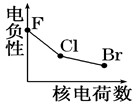
B．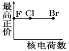
C．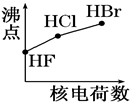
D．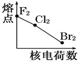
8．下列微粒中，最外层未成对电子数最多的是 ( )
A. O
B. Fe3+
C. Mn
D. P
9．下列各组原子中，彼此化学性质一定相似的是（ ）
A. 原子核外电子排布式为1s2的X原子；原子核外电子排布式为1s22s2的Y原子
B. 原子核外M层上仅有两个电子的X原子；原子核外N层上仅有两个电子的Y原子
C. 2p轨道上有三个未成对的电子的X原子；3p轨道上有三个未成对的电子的Y原子
D. 最外层都只有一个电子的X、Y原子
物质结构与性质练习2
10．砷、硒、溴为第4周期相邻元素，其中电负性最大的___________（填元素符号，下同）；第二电离能最小的是________________。
11．A、B、C、D、E、R 6种元素，位于周期表的前四周期，核电荷数依次增大。A、B、C、D、E的原子序数均小于20，其中C、E是金属元素；A和E同族，原子的最外层电子排布式为ns1。B和D同族，原子最外层的p能级电子数是s能级电子数的两倍，C的价电子恰好为D的一半。R原子的最外层只有一个电子。按要求用合适的化学用语回答下列问题。
（1）C、D、E三种元素的简单离子按半径由小到大的顺序为_______________________；
（2）B、C、D电负性从大到小的顺序____________________；
（3）A与E的第一电离能从小到大的顺序_________________；
（4）E的原子结构示意图是_________________________，E的最高价氧化物对应的水化物和 B、C形成的化合物反应的离子方程式__________________________________________；
（5）符合条件的R元素符号是_____________，价电子排布式是_______________________。
12．根据下列五种元素的第一至第四电离能数据(单位：kJ·mol－1)，回答下列各题：
元素代号 | I1 | I2 | I3 | I4 |
Q | 2080 | 4000 | 6100 | 9400 |
R | 496 | 4562 | 6912 | 9543 |
M | 738 | 1451 | 7733 | 10540 |
T | 578 | 1817 | 2745 | 11575 |
U | 420 | 3100 | 4400 | 5900 |
（1）在周期表中，最可能处于同一族的是_____________
A. R和U
B.M和T
C.T和U D.R和T
（2）下列离子的氧化性最弱的是_____________
A.M2＋
B.R2＋
C.T3＋
D.U＋
（3）下列元素中，化学性质和物理性质与Q元素最相似的是___________
A.硼
B.铍
C.氦
D.氢
（4）如果R、M、T是同周期的三种主族元素，则它们的原子序数由小到大的顺序是________________，其中元素M的第一电离能反常高的原因是___________________。
（5）每种元素都出现相邻两个电离能的数据相差较大的情况，这一事实从一个侧面说明了原子核外电子排布的一个规律是__________________________________。如果U是短周期元素，估计它的第2次电离能飞跃数据将发生在失去第_________个电子时。
物质结构与性质练习3
1．下列有关HF、HCl、HBr、HI的说法错误的是（ ）
A.均为直线形极性分子
B.熔、沸点依次增大
C.稳定性依次减弱
D.化学键类型相同
2．下列分子中既有σ键又有π键的是（ ）
①HCl ②H2O ③N2 ④H2O2 ⑤C2H4 ⑥C2H2
A.①②③
B.③④⑥
C.①③⑤
D.③⑤⑥
3．下列各组分子中都属于含有极性键的非极性分子的是（ ）
A.BF3、CH4
B.CO2、Cl2
C. H2S、C6H6
D.NH3、H2O
4．下列有关说法中正确的是（ ）
A.单质分子都含有化学键
B.金属键是金属阳离子和“自由电子”间的强烈的相互作用，具有方向性和饱和性
C.将某种化合物溶于水，若能导电说明这种化合物是离子化合物
D.离子键没有方向性，共价键有方向性和饱和性
5．有下列7种分子①BeCl2 ②NH3 ③H2O ④BF3 ⑤C2H4 ⑥C2H2 ⑦C6H6
其中心原子的杂化类型相同的是（ ）
A．①②⑥
B．③④⑤
C．②⑤⑥
D．④⑤⑦
6．在解释下列物质性质的变化规律与物质结构间的因果关系时，与化学键的强弱无关的是（ ）
A.H2O、H2S、H2Se、H2Te的热稳定性依次减弱
B.熔点：Al>Mg>Na>K
C.NaF、NaCl、NaBr、NaI的熔点依次降低
D.CF4、CCl4、CBr4、CI4的熔、沸点逐渐升高
7．某含铜化合物的离子结构如图所示。该离子中存在的作用力有__________；
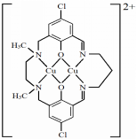
a．离子键 b．共价键 c．配位键
d．氢键 e．范德华力
物质结构与性质练习4
8．A、B、C、D四种元素处于同一短周期。在同族元素中，A的气态氢化物沸点最高，B的最高价氧化物对应的水化物的酸性在同周期中最强。C的电负性介于A、B之间。D与B处于相邻位置。
（1）在B的单质分子中存在___________个π键，________个σ键。
（2）已知B的气态氢化物很容易与H＋结合，形成的离子空间构型为___________________，其中B原子采取的杂化方式是_____________。B的气态氢化物与B的最高价氧化物对应的水化物反应得到的产物中的化学键，除了共价键还有_______________________。
（3）在A、B、C、D形成的电子数相同的四种氢化物中，沸点最低的是___________（写分子式），其沸点显著低于其他三种氢化物的原因是__________________________________。
（4）A的氢化物易溶于水，而D的氢化物难溶于水，原因_________________________。
9．不锈钢的种类很多，其中一种铁元素以外，还含有较多的Cr（铬）、Ni（镍）、Mo（钼），少量的Si（硅）、C（碳），微量的S（硫）、P（磷）。
（1）CH4的沸点比SiH4低，原因是_____________________________________________。
（2）Mo（钼）处于第五周期，且与Cr（铬）元素位于同一族，则基态Mo（钼）原子的价电子排布式是_________________。
（3）下图表示碳、硅和磷元素的四级电离能变化趋势，其中表示磷的曲线_______（填字母）。
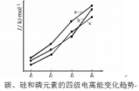
（4）镍元素能形成多种配合物，配离子[Ni(CN)4]2-中不含有的是_______（填选项编号）。
A.离子键 B.配位键 C. σ键 D.π键 E.氢键
（5）碳的另一种单质石墨呈层状结构，有一碳镁新型材料就是在石墨碳原子层间加入镁原子层，两层的俯视图如下。该材料的化学式为______________。
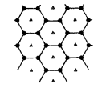
（6）开发新型储氢材料是氢能利用的重要研究方向。某种新型储氢材料的理论结构模型如下图所示，图中虚线框内碳原子的杂化轨道类型有___________种。
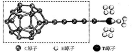
物质结构与性质练习5
1．下列所列物质的化学键类型、晶体类型都相同的是( )
A. NaCl与NaOH
B.CO2与H2O
C.SO2和SiO2
D.K与KCl
2．关于晶体的叙述正确的是( )
A.离子晶体都能导电
B. 分子晶体的构成微粒是分子，都含有共价键
C.金属的熔点和沸点都比分子晶体高
D.NaCl晶体中没有分子
3．在硼酸[B(OH)3]分子中，B原子与3个羟基相连，其晶体具有与石墨相似的层状结构。则分子中B原子杂化轨道的类型及同层分子间的主要作用力分别是( )
A．sp，范德华力
B．sp2，范德华力
C．sp2，氢键
D．sp3，氢键
4．下列物质的熔点均按由高到低的次序排列，其原因是键能由大到小的是( )
A.铝、钠、干冰
B.金刚石、碳化硅、晶体硅
C.碘化氢、溴化氢、氯化氢
D.二氧化硅、二氧化碳、一氧化碳
5．下列关于某些晶体性质的比较错误的是( )
A.熔点：MgO＞MgCl2
B.晶格能：NaCl＞NaBr
C.导电性：SiO2＞Ag
D.硬度：铁＞钠
6．下列说法中正确的是( )
A.金刚石晶体中的最小碳原子环由6个碳原子构成
B.Na2O2晶体中阴离子与阳离子数目之比为1∶1
C.1 mol SiO2有2 mol Si—O键
D.含有金属阳离子的晶体必定是离子晶体
7．(CH3)3Ga、(CH3CH2)3Ga是制取氮化镓的常见镓源，常温常压下均为无色透明的液体。下列说法正确的是( )
A. (CH3)3Ga形成的晶体属于分子晶体
B. (CH3)3Ga中所含化学键都是非极性键
C. (CH3CH2)3Ga晶体中含有氢键
D. (CH3CH2)3Ga中所有原子都达到稀有气体的稳定结构
8．关于NaCl和干冰的说法错误的是( )
A. CO2表示分子，NaCl不表示分子
B. NaCl晶胞中每个Na+周围等距且最近的Cl—有6个
C. 干冰晶胞中每个CO2周围等距且最近的CO2有12个
D. 每个NaCl晶胞中含一个Na+和一个Cl—
物质结构与性质练习6
9．铜与氧形成化合物的晶体结构如右图。该化合物的化学式为________，O的配位数是__________。
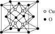
10．I.（1）（2015省质检）氮化镓（GaN）的晶体结构如下图所示。该晶体中____________（填“有”或“无”）配位键存在，判断的依据是______________________________。
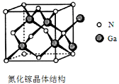
（2）（2015全国I卷）金刚石晶体结构如下图所示，C原子所连接的最小环也为六元环，每个C原子连接_________个六元环，六元环中最多有_______个C原子在同一平面。
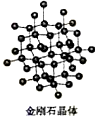
II．开发新型储氢材料是氢能利用的重要研究方向。
（1）Ti(BH4)3是一种储氢材料，可由TiCl4和LiBH4反应制得。
①基态Ti3+的未成对电子数有_______________个。
②LiBH4由Li+和BH4- 构成，BH4- 呈正四面体构型。LiBH4中不存在的作用力有_______
A.离子键 B.共价键 C.金属键 D.配位键
③Li、B、H元素的电负性由大到小排列顺序为________________。
（2）金属氢化物是具有良好发展前景的储氢材料。
①LiH中，离子半径：Li+_________H－( 填“ > ”、“ = ”或“ < ” ）
②某储氢材料是短周期金属元素M的氢化物。M的部分电离能如下表所示：
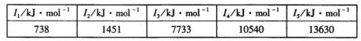
M是______________（填元素符号）。
11．（1）铝单质为面心立方晶体，其晶胞参数a＝0．405nm，晶胞中铝原子的配位数为__________。列式表示铝单质的密度_____________g·cm－3(不必计算出结果)
（2）硼砂是含结晶水的四硼酸钠，其阴离子Xm-（含 B、O、H 三种元素）的球棍模型如右下图所示：
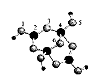
①在Xm-中，硼原子轨道的杂化类型有____________；
配位键存在于___________原子之间（填原子的数字标号）;m = ________（填数字）。
②硼砂晶体由Na+、Xm-和H2O构成，它们之间存在的作用力有__________________（填序号）。
A.离子键 B.共价键 C.金属键 D.范德华力 E .氢键